학생 등록
학생 진행학생 등록 시스템(system.lcic-campus.com)에서 신청서를 작성합니다. 제출하면 학생 계정이 만들어집니다. 가장 먼저 진행해야 하는 단계입니다.
-
1
신청서 시작 — 이메일 입력
신청 페이지(system.lcic-campus.com/apply/kr)에 접속하여 본인 이메일을 입력하고 제출을 누르면, 그 이메일로 신청 링크가 발송됩니다. 화면 오른쪽 위에서 한국어(KR)·영어(EN)를 바꿀 수 있습니다.
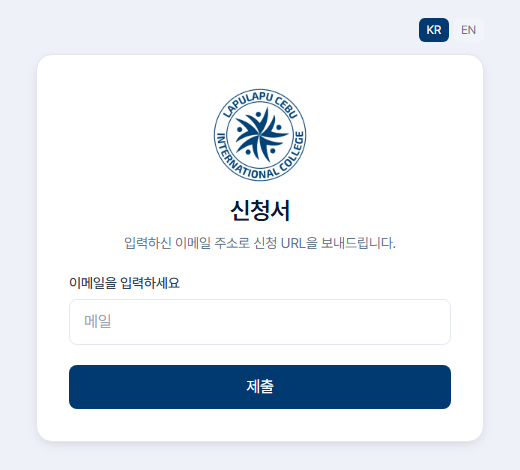
신청서 첫 화면 — 이메일 입력 후 제출스팸함 확인 · 메일이 안 보이면 스팸함 또는 프로모션함도 확인해주세요. -
2
메일에서 신청 링크 클릭
받은편지함에서 LCIC 발신 「Continue Your Application」 메일을 열고, 본문의 Continue Application 버튼을 클릭합니다.
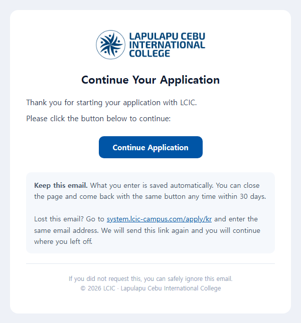
받은 메일에서 Continue Application 클릭자동 저장 · 입력한 내용은 자동으로 저장됩니다. 중간에 창을 닫아도 30일 안에는 같은 버튼으로 이어서 쓸 수 있습니다. 메일을 잃어버렸다면 신청 페이지에서 같은 이메일을 다시 입력하면 링크가 다시 발송됩니다. -
3
Step 1 — 기본 정보 입력
이름은 두 가지로 입력합니다 — 실제 이름(모국어)과 여권 영문 이름. 여권이 있으면 여권 번호·발행일·유효기간도 입력합니다. 날짜는 월-일-연도(MM-DD-YYYY) 순서로 숫자 8자리를 입력합니다.
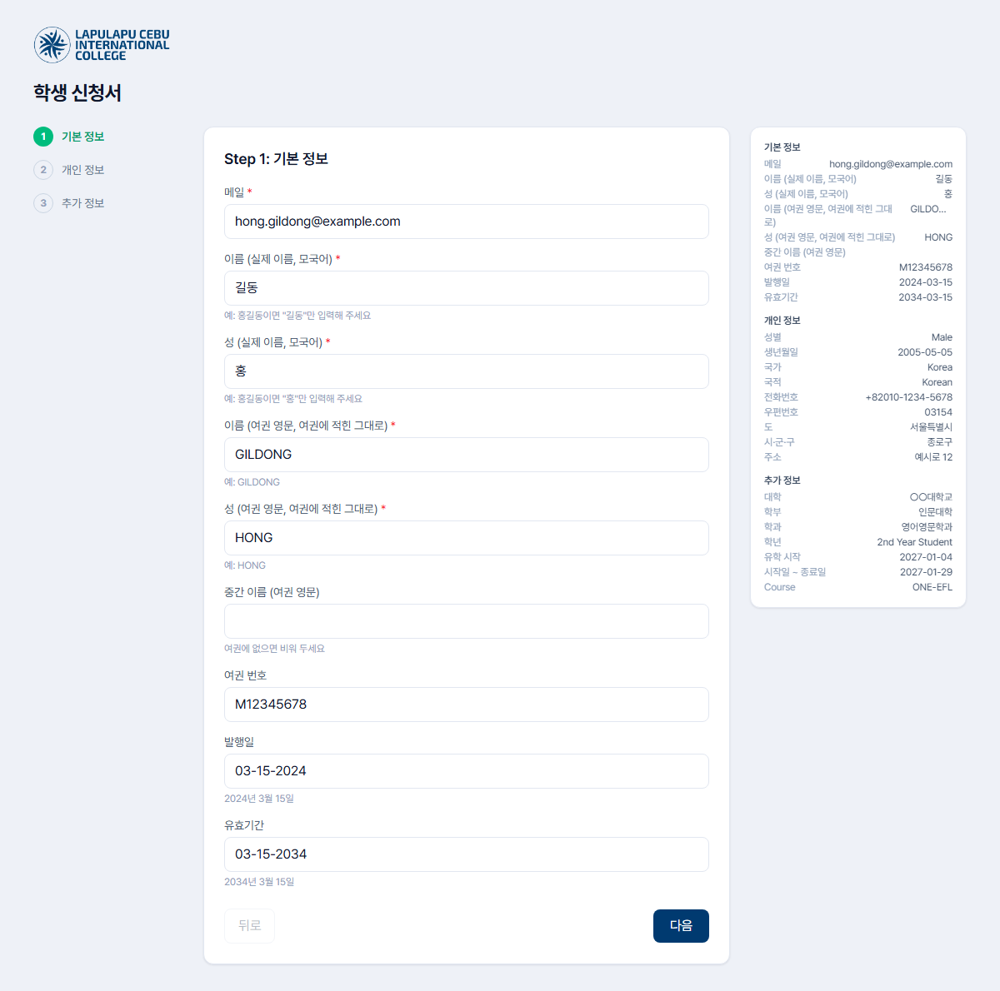
Step 1 — 이름·여권 정보 입력 (오른쪽 칸에 지금까지 입력한 내용이 모두 보입니다)주의 · 여권 영문명은 여권에 기재된 그대로 입력해야 합니다. 오타가 있으면 비자 발급에 문제가 발생할 수 있습니다. -
4
Step 2 — 개인 정보 입력
성별·생년월일·국가·국적·전화번호를 입력하고 주소를 적습니다(우편번호 옆 주소 찾기 버튼 사용 가능). 비상 연락처도 함께 입력해 주세요.
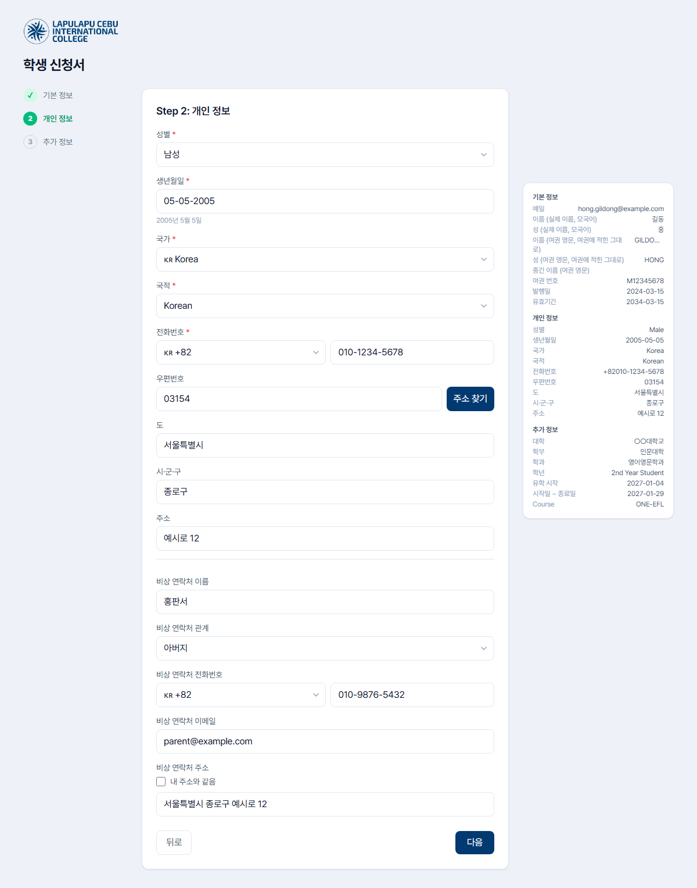
Step 2 — 개인 정보 + 비상 연락처비상 연락처 · 한국에서 연락 가능한 가족·보호자 정보를 입력하세요. 긴급 상황 시 학교가 연락하는 채널입니다. -
5
Step 3 — 추가 정보 입력 및 제출
본인의 대학 · 학부 · 학과 · 학년 · 유학 시작 · 연수 기간(주)을 고릅니다. 목록에 대학이 없으면 아래 칸에 대학명을 직접 입력하세요. 종료일은 자동으로 계산됩니다.
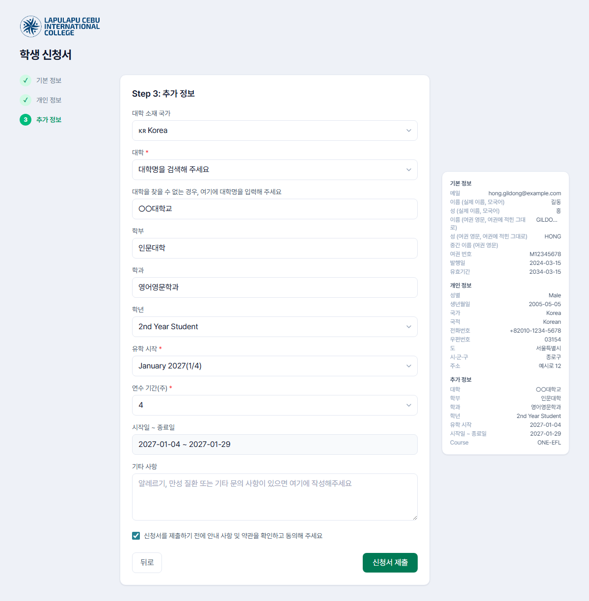
예시일 뿐이에요. 본인 일정에 맞춰 정확히 골라주세요Step 3 — 추가 정보 입력 + 동의 체크 후 신청서 제출유학시작일 · 본인의 실제 입국·입실 일정에 맞춰 정확하게 입력해주세요. 시작일이 잘못 입력되면 반 배정, 비자, 픽업 등 이후 절차에 문제가 생길 수 있습니다. 제출 방법
1 오른쪽 요약으로 입력 내용 확인 2 안내 사항 및 약관 동의 체크 3 [신청서 제출] → 최종 제출주의 · 제출 후 학교 관리자 승인 절차가 진행됩니다. 제출 전 우측 패널로 입력 내용을 다시 한번 확인하세요. -
6
메일에서 비밀번호 설정
제출하면 같은 이메일로 「Set Your Password — LCIC」 메일이 옵니다. 본문의 Set Password를 눌러 새 비밀번호(8자 이상)를 두 번 입력하고 Save and sign in을 누르면 바로 로그인됩니다. 임시 비밀번호는 없습니다.
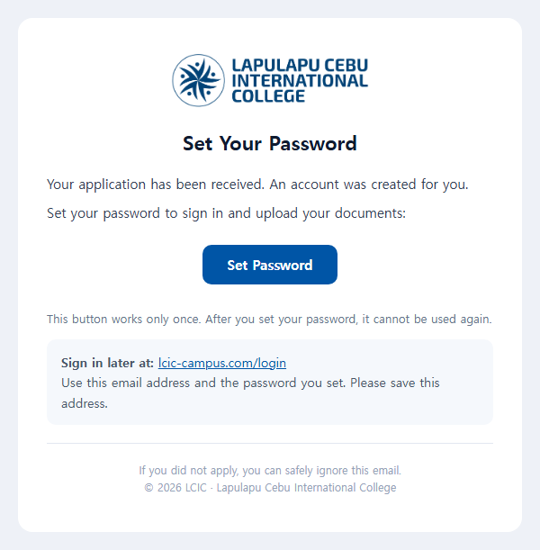
비밀번호 설정 메일 — Set Password 클릭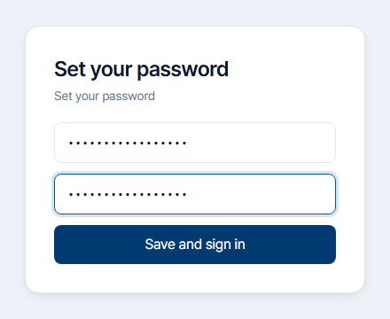
새 비밀번호를 두 번 입력 후 Save and sign in버튼은 한 번만 쓸 수 있습니다 · 링크가 이미 사용됐거나 만료됐다는 안내가 나오면, 그 화면에서 이메일을 입력하고 Send me a new link를 누르세요. -
7
학생 포털 로그인
다음부터는 lcic-campus.com/login에서 이메일과 직접 정한 비밀번호로 로그인합니다. 비밀번호를 잊었다면 학교 사무실에 문의해 주세요.
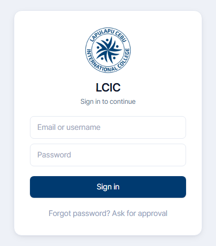
LCIC 로그인 화면 — 이메일과 비밀번호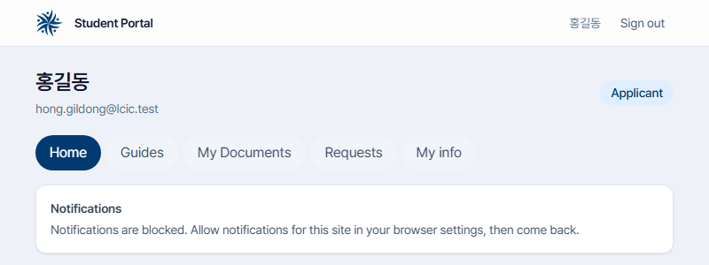
로그인 후 학생 포털(Student Portal)등록 완료 · 학생 포털에는 Home · Guides · My Documents · Requests · My info 탭이 있습니다. 학교 승인 후에는 같은 계정으로 로그인하면 LCIC CAMPUS 화면(Home · Today · Buddy · Messages · Profile)이 열립니다.
※ 화면 디자인은 시스템 업데이트로 일부 달라질 수 있습니다. 추가 문의는 궁금한 사항 페이지를 참고해주세요.
서류 업로드
학생 진행학생 등록을 완료한 뒤, 입학에 필요한 서류 5종을 학생 포털의 My Documents 탭에 업로드합니다.
-
1
EFSET 사이트 접속 → 90분 테스트 선택
아래 링크를 통해 EFSET 홈페이지에 접속합니다.
https://www.efset.org상단 메뉴에서 Our Tests → 4 skills (90 min)을 선택합니다.
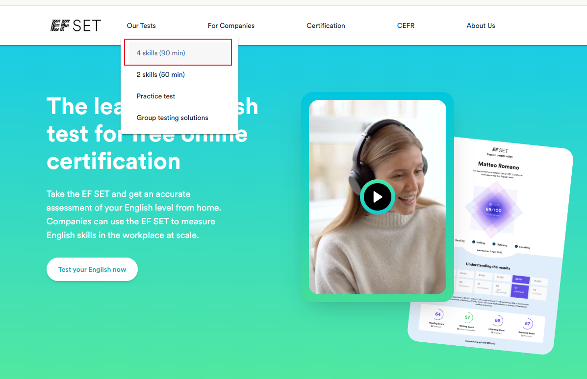
"Our full English test · 90 MIN EF SET" 안내가 보이면 Start the test 버튼을 누릅니다.
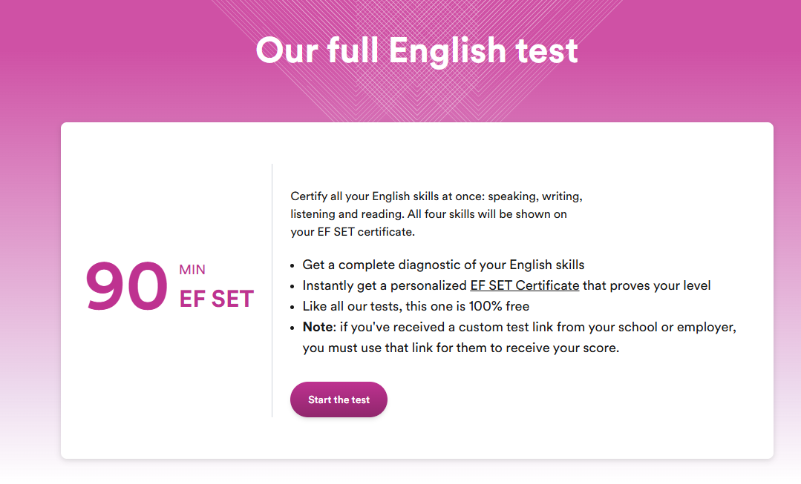
주의 · EF SET은 90일에 1회만 응시할 수 있습니다. 이전에 응시한 적이 있다면 아래와 같이 "Come back soon" 안내가 표시됩니다. 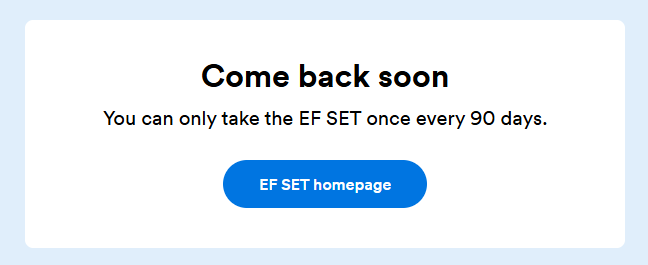
EF SET 응시 후 90일 이내 재접속 시 표시되는 화면 -
2
시험 안내 확인
총 4영역 Reading 20분 · Listening 20분 · Writing 35분 · Speaking 15분, 약 90분 소요됩니다. 안내문을 확인한 뒤 Next를 누릅니다.
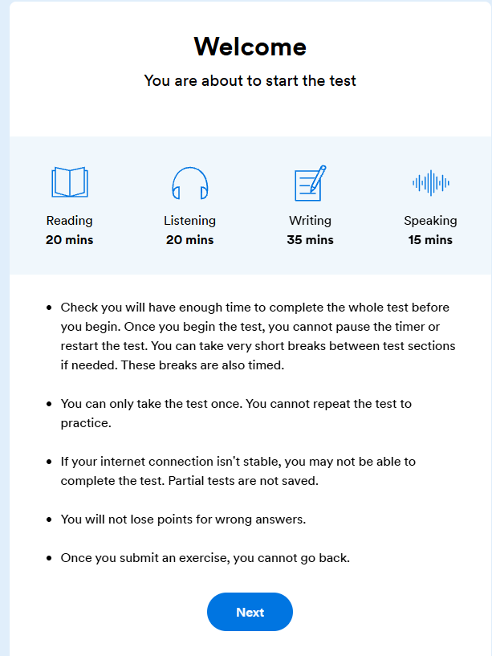
핵심 주의사항 · 시작 후 타이머는 멈출 수 없고 단 1회만 응시 가능합니다. 인터넷이 끊기면 시험이 저장되지 않으니 안정적인 환경에서 응시하세요. -
3
계정 만들기 (Configure your account)
First name · Last name(EF SET certificate에 표시됨), Email address(결과 수신 주소, 한번 입력하면 변경 불가)를 입력합니다. Phone은 선택입니다. Privacy Policy 동의 후 Proceed.
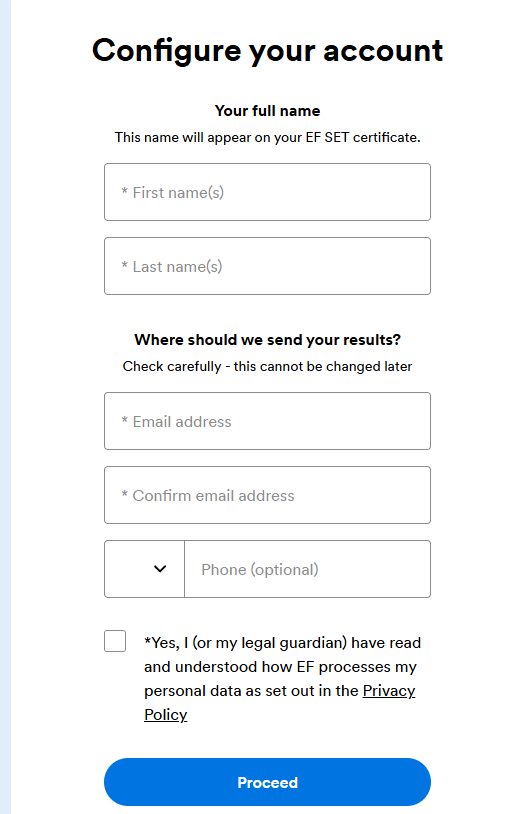
이름은 여권과 동일하게 입력하세요. Certificate에 그대로 인쇄되며 LCIC에서도 동일 표기를 사용합니다. 입학 전에 응시할 때 썼던 이메일은 다시 쓸 수 없습니다. 같은 주소를 넣으면 중복으로 막혀 시험이 시작되지 않습니다. 다른 이메일로 만들어 주세요. 결과지는 이름으로 확인하므로 신청서 이메일과 달라도 괜찮습니다. -
4
시험 응시 — 준비물 확인
4영역 시험을 차분히 끝까지 응시합니다.
준비물 · 헤드셋 또는 이어폰(Listening용), 마이크(Speaking용). 조용한 공간에서 응시하세요. -
5
점수 확인 (Your score explained)
시험 종료 후 EF SET 점수와 CEFR 등급(A1~C2)이 표시됩니다. Reading·Listening 영역별 점수와 등급 해석도 함께 보입니다.
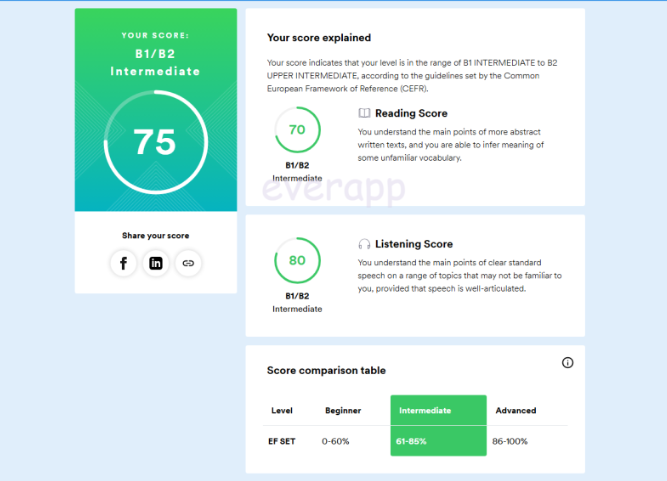
-
6
Certificate 다운로드
Certificate를 다운로드(PDF) 받거나 화면 캡처로 저장합니다. 이 파일은 My Documents의 Test Scores 칸에 업로드합니다.
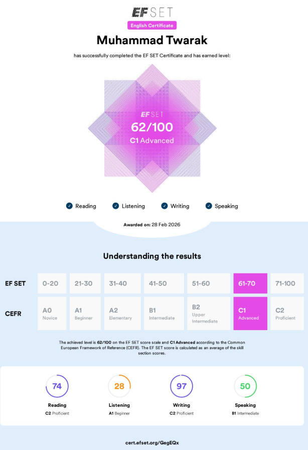
다음 단계 · 아래 버튼을 누르면 서류 업로드 탭으로 바로 이동합니다.
로그인 → My Documents 탭
lcic-campus.com/login에 로그인한 뒤 My Documents 탭을 엽니다. Documents to submit에서 서류 옆 Upload를 눌러 파일을 고르면 바로 올라갑니다.
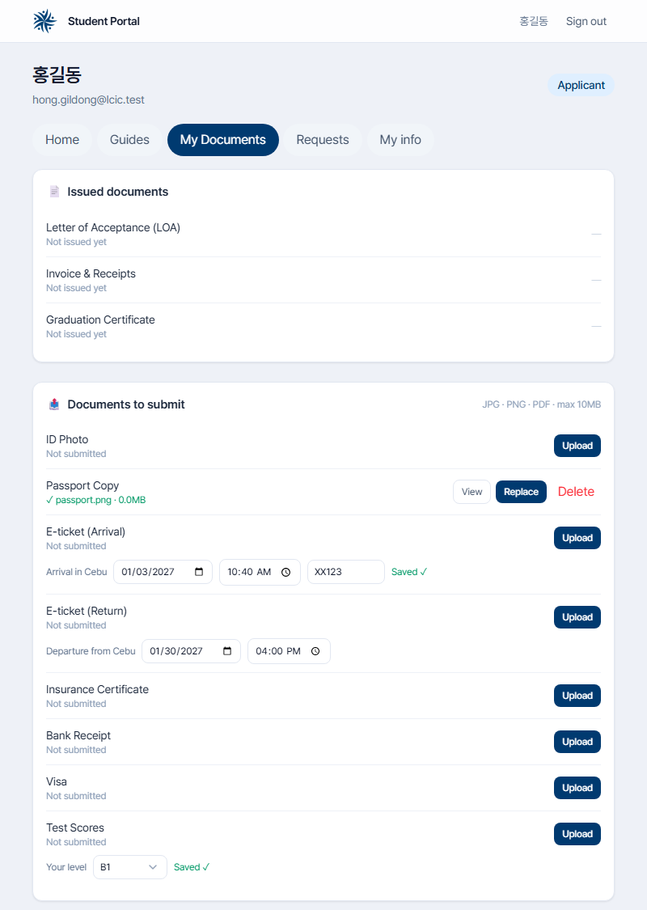
Passport Copy — 여권 사본 업로드
Passport Copy 줄의 Upload를 눌러 여권 인적사항 면 사진(또는 PDF)을 올립니다. 올라가면 파일 이름이 초록색으로 표시되고 View · Replace · Delete 버튼이 생깁니다. 여권 번호·발행일·유효기간은 신청서(Step 1)에서 입력하는 칸입니다.
E-ticket (Arrival) · E-ticket (Return) — 왕복 항공권
출국편은 E-ticket (Arrival), 귀국편은 E-ticket (Return) 칸에 각각 올립니다. 칸 아래에 Arrival in Cebu(세부 도착 날짜·시각·편명)와 Departure from Cebu(세부 출발 날짜·시각)를 입력하면 바로 저장됩니다(Saved ✓).
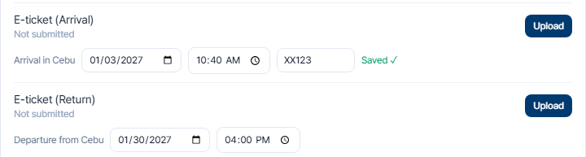
Test Scores — 레벨 테스트 자료
Test Scores 칸에 EF SET Certificate(PDF/이미지)를 올리고, Your level에서 본인 점수에 해당하는 레벨(A1~C2)을 고릅니다.
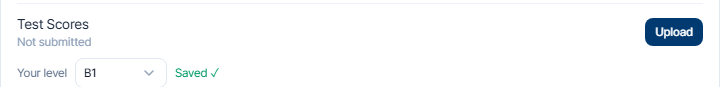
ID Photo · Insurance Certificate — 본인 사진 + 보험 증명서
ID Photo 칸에 학생증 발급용 2 x 2 inch 정면 사진을, Insurance Certificate 칸에 해외여행자 보험 증명서를 올립니다.
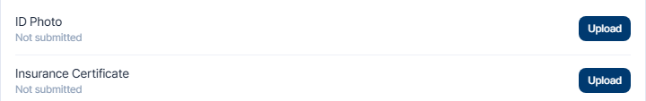
※ EF SET 사이트에서 "Come back soon — You can only take the EF SET once every 90 days." 안내가 뜨면 90일 경과 후 재응시 가능합니다.
※ 모든 서류는 PDF 또는 이미지(JPG/PNG) 형식 · 파일당 최대 10MB.
※ My Documents에는 Bank Receipt(송금 영수증)·Visa 칸도 있습니다 — 학교 안내가 있을 때 올려주세요.
레벨 배정 완료
LCIC 처리LCIC 어학팀이 제출하신 레벨 테스트 자료를 검토하여 적합한 클래스 레벨을 배정해드립니다.
수강 신청
학생 진행배정받은 레벨에 맞춰 수강 과목을 선택합니다. 정규 수업 외에도 선택 과목이 마련되어 있으니 학생 등록 시스템에서 안내에 따라 신청해주세요.
버디 신청
도착 1주 전출국 1주일 전까지 버디(buddy)를 신청해주세요. 현지 적응을 도와줄 LCIC 재학생 또는 현지 학생이 매칭되어, 도착 후 학교생활 정착을 지원합니다. 예약은 LCIC CAMPUS 화면의 Buddy에서 합니다.
출국 전 체크리스트
모든 입학 절차를 완료한 뒤, 출국 전 아래 12종 항목을 준비해주세요.
필수 서류 4종 + 가져갈 물품 8종.
필수 서류
DOCUMENTS · 4종-
입학허가서 (LOA) 비자·항공권 등에 쓰는 공식 입학 확인 서류. 눌러서 다운로드 위치 확인 및 사이트로 이동하세요.
-
여권 (Passport) 만료일이 출국일 기준 6개월 이상 남아있어야 합니다.
-
여권 사본 인적사항 면 사진 (분실·재발급 대비).
-
왕복 항공권 E-ticket 한국에서 출국할 때 사용. PDF 또는 출력본 형태로 준비합니다.
가져갈 물품
ITEMS · 8종-
USD 현금 도착 직후 페소 환전용.
-
신용카드 (VISA / MASTER) 해외 결제 가능 카드 1매 이상.
-
노트북 혹은 태블릿 PC 수업 진행 및 과제 제출용.
-
헤드셋 / 이어폰 + 마이크 Listening·EF SET·1:1 수업용. 마이크 내장 모델 권장.
-
상비약 / 평소 복용약 감기·지사·소화제 등. 만성질환 약은 처방전과 함께.
-
220V 어댑터 / 멀티탭 필리핀 콘센트는 한국과 동일한 220V (Type A/B/C 혼용).
-
e-Travel QR 코드 출국 72시간 이내 발급. 스크린샷 + 출력본 모두 준비.
-
해외여행자 보험 증서 Insurance Certificate. My Documents에도 업로드 필요.
절차 관련 문의는 학교로 직접 연락주세요.